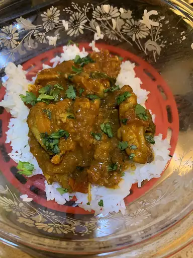

Chicken Tikka Masala

A phenomenal recipe from the indian cuisine
There is no standard recipe to make it, but most variants contain coconut milk or tomato sauce
with cream with different spices.
It's popularity is so great that most Indian restaurants around the world offer it in their menus. It competes
with tandoori chichen as an emblem of Indian and South Asian cuisine. Although it is gaining popularity in India,
it is not as famous as outside its borders
Ingredients
- 1 1/2 pound skinless, boneless chicken thighs
- 1 tablespoon vegetable oil
- 2 teaspoons kosher salt
- 2 teaspoons garam masala
- 2 teaspoons ground cumin
- 1 teaspoon ground coriander
- 1 teaspoon smoked paprika
- 1 teaspoon ground turmeric
- 1/2 teaspoon ground black pepper
- 1/4 teaspoon cayenne pepper
- 1/8 teaspoon ground cardamom
- 2 tablespoons clarified butter (ghee), or more as needed
- 1 onion, chopped
- 1/4 cup tomato paste
- 4 cloves garlic, finely grated
- 1 tablespoon finely grated ginger, or more to taste
- 1 cup crushed tomatoes
- 1 (13 ounce) can coconut milk
- 1/2 cup chicken broth, or as needed
- 2 tablespoons chopped fresh cilantro
- 1/2 teaspoon red pepper flakes
- Salt and ground black pepper to taste
Steps
- Place chicken in a bowl. Drizzle vegetable oil over chicken; toss to coat.
- Whisk together salt, garam masala, cumin, coriander, paprika, turmeric, black pepper, cayenne pepper, and cardamom in a small bowl. Sprinkle over chicken and turn to coat evenly.
- Melt clarified butter in a large, heavy skillet over high heat. Cook chicken thighs in hot butter until browned on all sides, 5 to 10 minutes. Transfer chicken to a plate. When cool enough to handle, cut chicken into bite-sized pieces.
- Make sauce:Place the skillet with chicken drippings over medium-high heat. Stir onion into the skillet; sauté until onion softens and turns translucent, 5 to 6 minutes. Stir in tomato paste and cook until paste caramelizes, about 5 minutes. Stir garlic and ginger into tomato-onion mixture; cook until fragrant, about 1 minute.
- Pour crushed tomatoes into the skillet. Bring to a boil while scraping the browned bits of food off of the bottom of the skillet with a wooden spoon. Pour in coconut milk and chicken broth; bring to a simmer, reduce heat to medium-low, and cook, stirring occasionally, until flavors blend and sauce is slightly reduced, about 15 minutes.
- Stir chicken and any accumulated juices into sauce. Add cilantro and red pepper flakes; bring to a simmer, reduce heat to medium-low, and cook until chicken is cooked through and tender, 10 to 15 minutes. Season with salt and black pepper
- Serve hot and enjoy!